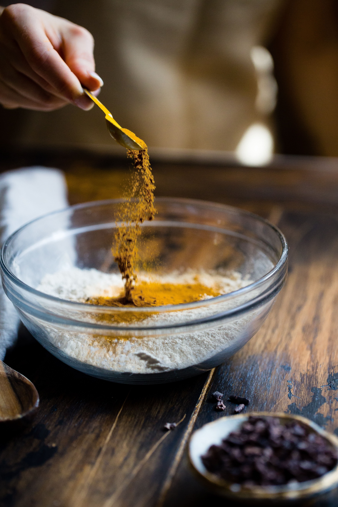

Kunyit
Kunyit adalah salah satu rempah-rempah yang memiliki sejumlah manfaat kesehatan yang telah dikenal dan digunakan secara tradisional.
Rempah-rempah


Kunyit adalah salah satu rempah-rempah yang memiliki sejumlah manfaat kesehatan yang telah dikenal dan digunakan secara tradisional.
Rempah-rempah
Kunyit, juga dikenal sebagai Curcuma longa, adalah tumbuhan umbi yang berasal dari Asia Selatan.
Umbinya, yang memiliki warna kuning keemasan yang cerah, adalah bagian yang paling sering
digunakan dalam berbagai masakan dan pengobatan tradisional. Kunyit terkenal karena memiliki
rasa dan aroma yang khas, serta memiliki banyak manfaat kesehatan, terutama karena senyawa
aktifnya yang disebut kurkumin. Senyawa ini memiliki sifat antiinflamasi dan antioksidan yang kuat.
| Jenis Kunyit | Deskripsi |
|---|---|
| Kunyit Biasa (Turmeric) | Jenis kunyit yang paling umum digunakan. Umbi kunyit memiliki warna kuning keemasan dan rasa yang khas. |
| Kunyit Putih (White Turmeric) | Kunyit putih memiliki warna umbi putih atau kuning pucat. Ini lebih jarang digunakan dalam masakan tetapi memiliki sifat obat tradisional. |
| Kunyit Jawa (Javanese Turmeric) | Jenis ini memiliki umbi yang berbeda dengan warna kuning kehijauan dan sering digunakan dalam masakan Jawa. |
| Kunyit Hitam (Black Turmeric) | Kunyit hitam memiliki umbi berwarna hitam atau gelap dan juga memiliki manfaat obat tradisional yang unik. |
Kunyit adalah rempah-rempah yang memiliki sejumlah manfaat kesehatan. Senyawa aktif dalam kunyit, yang disebut kurkumin, memiliki sifat antiinflamasi dan antioksidan yang dapat membantu meredakan peradangan dalam tubuh dan melindungi sel-sel tubuh dari kerusakan oksidatif. Selain itu, kunyit telah dikaitkan dengan pengurangan risiko penyakit jantung, perbaikan kesehatan pencernaan, dan penggunaan dalam pengobatan tradisional untuk masalah pernapasan seperti pilek dan batuk. Kunyit juga telah menjadi topik penelitian dalam potensi efek anti-kanker, dan juga digunakan dalam perawatan kulit karena sifat antiinflamasi dan antibakteri. Penting untuk menggunakan kunyit secara bijak sebagai bagian dari diet seimbang dan berkonsultasi dengan profesional kesehatan jika Anda memiliki pertimbangan khusus terkait penggunaannya.
Platform penyedia informasi seputar cita rasa, pesona dan kekayaan alam indonesia.